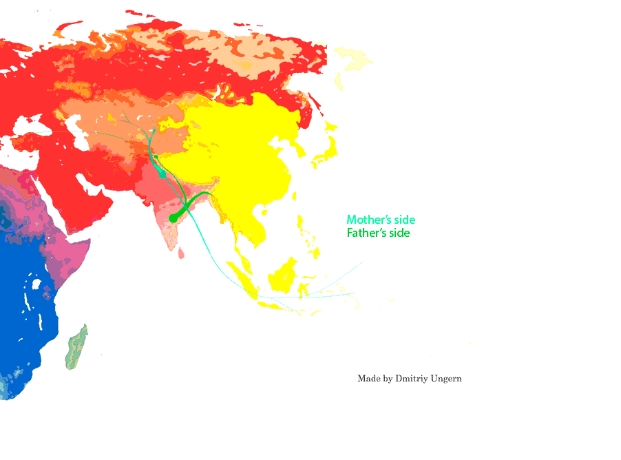
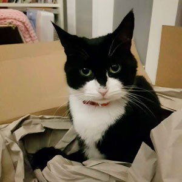

This website is best displayed on a computer monitor. This website may not display correctly on resolutions less than 800x600.
Welcome!

Use the top horizontal navigation bar to flip between pages and the the contents box located in the sidebar to jump to each section of a page.
It's so inviting, click a button!
This website was written using Vim in basic HTML and CSS with minimal Javascript, as all things should be!
A successor to one of my father's websites: Zayn.net which lasted from 2008 till 2010.
If you enjoy your stay on this page, remember to leave your mark on the Guestbook! The most recent guestbook entry is featured on this page's sidebar!
You found an error? Something is not displaying correctly? Either way, let me know if you have anything to say using my mailto link, also located in the sidebar.
You can visit this website's github here: ZaynWorld Github
Feel free to take any resources from this repository!
Zayn
Born: 9th April 1336
Kesh, Chagatai Khanate (now Shahrisabz, Uzbekistan)
Died: 18th February 1405
(aged 68) Farab, Timurid Empire (now Otrar, Kazakhstan)

Zayn's ethno-racial map featured above.
Youtube and LBRY channels are linked below.
(Note: channels contain overlap)
YouTube
LBRY
Specific videos will be embedded on the projects page.
Io
It's Io's job to look after the website when nobody else is present,
and it seems like it's your turn to look after him for a little while too.
Io is Instagram famous, see for yourself: Io's Instagram.

Remember to visit the Gallery to see more of Io!